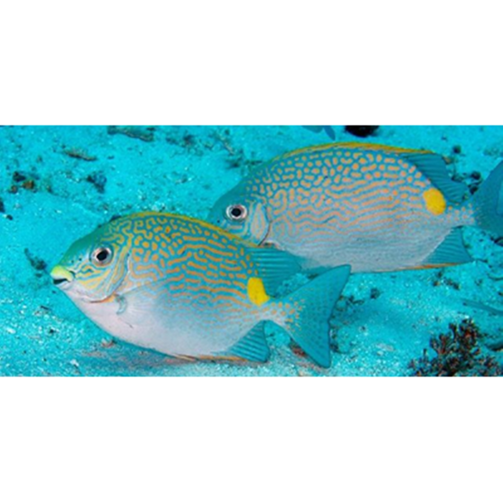

Ikan Baronang
Ikan Baronang tergolong ikan laut yang bisa dimakan. Ikan ini memiliki julukan Rabbit Fish, karena bentuk kepalanya yang dianggap mirip kelinci. Ikan ini cukup ekonomis di pasaran, banyak peminatnya. Baronang biasanya ditangkap oleh para nelayan dengan bantuan jaring insang, meski ada pula nelayan nakal yang gunakan bahan peledak. Baronang hidup di perairan pantai sedalam 50 meter. Tubuh ikan ini bisa mencapai panjang 40 cm. Namun biasanya sudah bisa ditangkap saat tubuhnya sudah mencapai 25 cm.
Ikan Baronang memiliki perilaku yang lucu. Ia termasuk ikan herbivora yang biasanya cuma makan zooplankton, alga, rumput laut, lamun, dan tunikata. Namun bila nelayan memancingnya dengan umpan ikan kecil misalnya, ia mau makan juga. Ikan ini kalau sudah ditangkap, oleh nelayan bakal dilempar ke pasar, untuk diolah jadi ikan segar, kering, maupun asin. Ada satu hal yang harus diperhatikan nelayan kalau mau menangkap ikan ini, yaitu harus hati-hati dengan sirip utamanya yang mengandung racun.
Kandungan Ikan Baronang (dalam 100 gram)
| Protein (g) | Kalori (Kal) | Lemak (g) | Besi (mg) | Kalsium (mg) | Fosfor (mg) | Vit A (SI) | Vit B1 (mg) | Kolesterol (mg) | BDD (%) |
|---|---|---|---|---|---|---|---|---|---|
| 29 | 120 | 5,24 | 2,7 | 1,20 | 0,22 | - | - | 33 | 100 |
Manfaat Ikan Baronang
- Mengandung Banyak Protein yang Baik Untuk Pertumbuhan
- Menurunkan Tekanan Darah Tinggi
- Sebagai Antibiotik Alami
- Kanker
- Asma
Protein hewani pada ikan Baronang bisa untuk membangun sistem kekebalan tubuh. Dengan makan ikan ini, tubuh anda akan memiliki resistensi untuk melawan rasa sakit akibat racun, bakteri, maupun virus. Protein ikan juga berfungsi menjaga keseimbangan asam dan basa dalam tubuh (mengatur PH tubuh). Namun fungsi utama dari protein hewani adalah sebagai zat pembentuk massa otot.
Meskipun ikan baronang mengandung lemak, namun lemak yang ada didalamnya ini tergolong HDL yang baik bagi tubuh. Lemak baik ini akan meluruhkan kristal-kristal garam yang menyumbat di arteri, sehingga tekanan darah menjadi normal kembali.
Antibiotik merupakan obat yang fungsinya untuk melawan bakteri penyebab penyakit di tubuh anda. Zat ini dipercaya mempercepat proses penyembuhan penyakit yang disebabkan bakteri ini. Misalnya seperti batuk, konon mudah sembuh kalau minum antibiotik.
Kanker didalam tubuh terjadi karena pertumbuhan abnormal sel – sel didalam tubuh. Kanker merupakan penyebab kematian nomor dua terbanyak sesudah penyakit jantung. Penderita kanker mengetahui bahwa penyebab kanker didalam tubuh lebih disebabkan karena gaya hidup yang tidak sehat sama sekali. Perlu diketahui bahwa kesehatan lebih berharga daripada uang. Dengan kesehatan yang dijaga dari usia dini maka bisa menjamin kesehatan yang baik untuk usia tua nanti. Dan kabar baik dari manfaat mengkonsumsi ikan baronang adalah terhindari dari kanker yang bisa kapan saja menggerogoti tubuh Anda.
Hingga saat ini, penyakit asma memang bisa disembuhkan, tetapi tidak total. Penyakit asma bisa berhenti dalam waktu tertentu, namun kadang bisa kembali kambuh karena beberapa faktor. Namun, Anda tidak perlu khawatir karena ikan baronang dapat membantu mengatasi asma. Bagi penderita asma, konsumsi ikan baronang secara rutin untuk membantu mengatasi keluhan yang Anda alami.